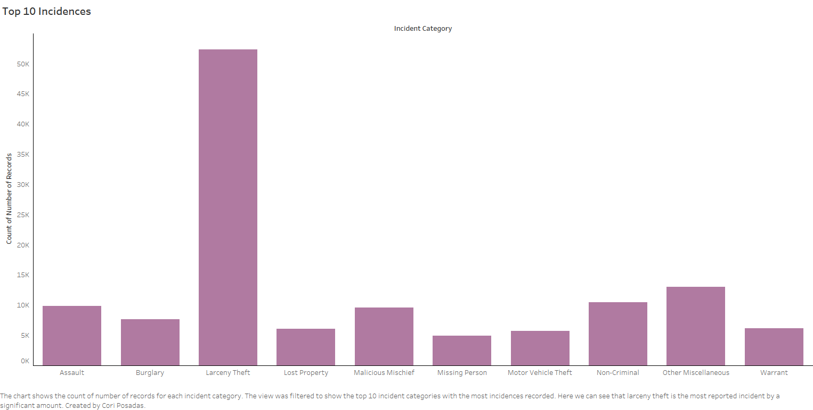
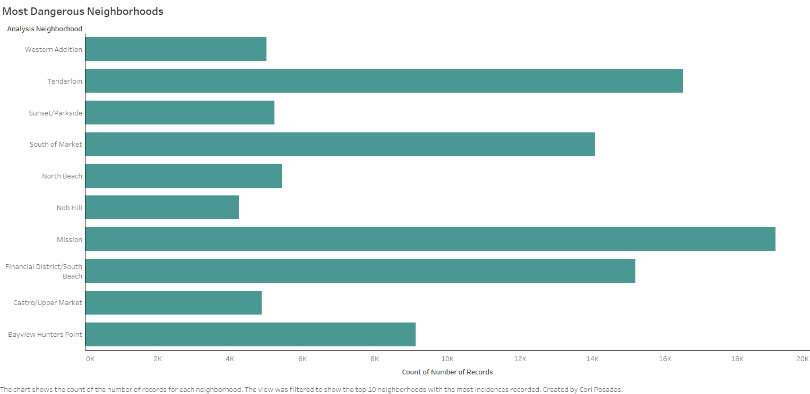
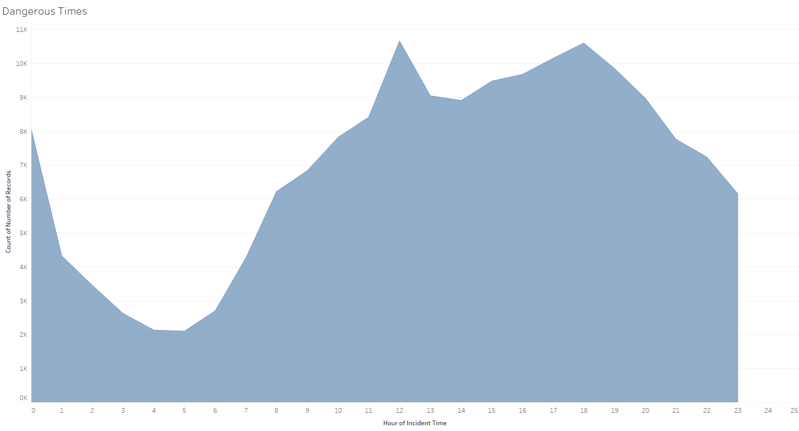

Insert interpretations
If appropriate, provide a brief discussion of the primary goal and findings of the visualization, any challenges encountered creating the visualization, and any other context as required by the assignment.
If appropriate, provide credit for the dataset, any code used, and design inspirations here. Unsufficient discussion here is a violation of the academic honesty policy and may result in an F grade for the assignment or the entire course.
| Done? | Letter | Justification |
|---|---|---|
| D | If appropriate, provide a brief justification for this level of functionality. Clearly state if this level was not implemented. | |
| C | If appropriate, provide a brief justification for this level of functionality. Clearly state if this level was not implemented. | |
| B | If appropriate, provide a brief justification for this level of functionality. Clearly state if this level was not implemented. | |
| A | If appropriate, provide a brief justification for this level of functionality. Clearly state if this level was not implemented. |
Any additional context you want to provide regarding functionality and grading can be included here. This may include any challenges or bugs you ran into that prevented you from implementing additional functionality.